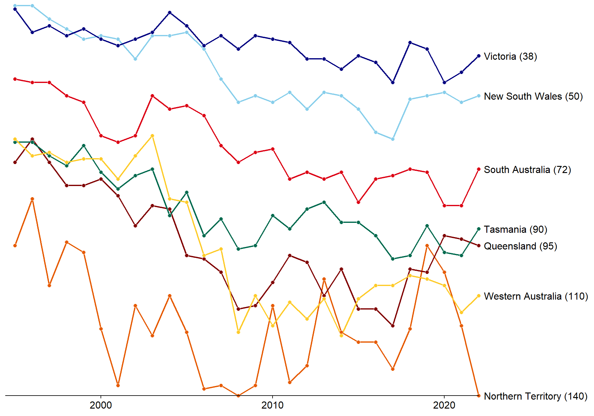
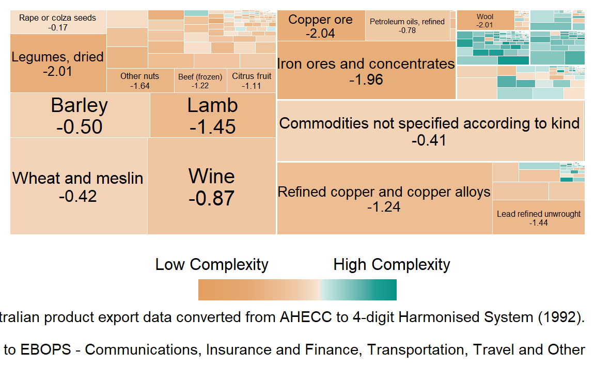

Economic Complexity
Economic complexity is a measure of the productive knowledge present in a region, based on an activity. It can be calculated based comparative advantage measured by:
Exports by product by country
Employment by industry/occupation by local government area
Patents by patent class by region
A region has comparative advantage if its share of an activity is larger than the share across all regions.
- For example, when measuring complexity by exports, a region has comparative advantage in the export of a product if the share of the regions exports in that product is greater than the share of that products exports in global trade.
Regions and activities are ranked based on their level of complexity. Complex regions have comparative advantage in many complex activities.
Economic complexity, when measured by product exports by country, is a strong predictor and driver of future economic growth, and reveals the trajectory of future growth. Countries with a higher level of complexity than their Gross Domestic Product (GDP) would predict are more likely to grow faster in the future “Why Is Economic Complexity Important?” (2014).
Typically, economic complexity is calculated at the national level - and a wealth of international data is available at the Atlas of Economic Complexity.
Economic complexity of Australian States
Australia’s economic complexity index has declined from a ranking of 55th in 1995 to 93rd in 2021. The high level of income relative to the low level of economic complexity means Australia is likely to grow more slowly in the future.
Complexity is not distributed evenly across Australia, and each State and Territory has its own areas of specialisation.
A policy response to Australia’s declining complexity should consider the complexity of Australian States.
Building a model of economic complexity for Australian States requires state based commodity and services export data. Overseas exports for the Australian States is provided by the Queensland Government Statistician’s Office Office (2024). This data set has overseas exports for 6,108 products for all States and Territories of Australia for the period 1995/96 through 2022/23. The products are classified by the Australian Harmonised Export Commodity Classification (AHECC) at an 8-digit level. Note that some products are subject to Broad Commodity Details restrictions whose export value are not assigned to any State or Territory. However, the total value of confidential items exported is reported for each State and Territory. This is consistent with the Harmonised System code 9999: Commodities not specified according to kind, however the proportion of confidential trade at the State level than at the national level. Services data is sourced from the Australian Bureau of Statistics Statistics (2022). This data is combined with international trade data sourced from the Atlas of Economic Complexity website Harvard University (2022) which has overseas exports for 5,040 products and 5 services for 251 countries over the period 1995 through 2021. The products are classified based on the 1992 revision of the Harmonised System, called HS0 at a 6-digit level.
Economic Complexity Index
The economic complexity index is calculated for each year between 1996 and 2021 and shown below in Figure 1 based on the ranking of each state out of 139.
Low levels of economic complexity are the result of export baskets dominated by low complexity products and services. An example of this is shown in Figure 2 for South Australia.



# A tibble: 129 × 6
id product benefit relatedness export_value rca
<int> <chr> <dbl> <dbl> <dbl> <dbl>
1 1 Steam boilers 0.0641 0.0639 234154. 0.150
2 2 Water gas generators 0.0263 0.0801 93863. 0.269
3 3 Steam turbines 0.411 0.0534 26293. 0.0151
4 4 Spark-ignition reciprocating … 0.422 0.0573 564479. 0.0296
5 5 Compression-ignition internal… 0.403 0.0606 137228. 0.00718
6 6 Parts suitable for use with s… 0.279 0.0563 649991. 0.0233
7 7 Hydraulic turbines, water whe… 0.118 0.0635 45149. 0.101
8 8 Gas turbines 0.228 0.0689 90135. 0.00168
9 9 Other engines and motors 0.295 0.0672 1061475. 0.0961
10 10 Pumps for liquids 0.468 0.0552 10071408. 0.336
# ℹ 119 more rowsData processing
The international trade dataset for the Australian States and Territories is converted from the AHECC to the 1992 revision of the Harmonised System1 using a recursive algorithm. Export values are converted from Australian to US dollars by applying the average exchange rate over the financial year, and the data is appended to the Atlas international dataset. Financial year data is assumed to occur within the calendar year for consistency with Atlas of Economic Complexity data. Additionally, all products and countries not represented on the Atlas of Economic Complexity website are removed, and the Australian Capital Territory is removed from the dataset2.
References
Harvard University, The Growth Lab at. 2022. “International Trade (HS92).” 2022.
Office, Queensland Government Statistician’s. 2024. “Overseas Exports by Commodity (8-Digit AHECC) and Country of Destination, Queensland and Other States and Territories, 2012-13 to 2022-23 (Table).” 2024. https://www.qgso.qld.gov.au/issues/3536/overseas-exports-commodity-8-digit-ahecc-country-dest-qld-state-territory-201213-202223.xlsx.
Statistics, Australian Bureau of. 2022. “International Trade: Supplementary Information, Financial Year, 2021-22.” 2022. https://www.abs.gov.au/statistics/economy/international-trade/international-trade-supplementary-information-financial-year/latest-release.
“Why Is Economic Complexity Important?” 2014. In, 26–33. The MIT Press. https://doi.org/10.7551/mitpress/9647.003.0005.
Footnotes
As there are more AHECC codes than HS0 codes some information is lost when converting between the two classifications. These typically are additional Australian specific products or products of high economic importance to Australia. For example, the AHECC captures exports of Live Australian endemic animals. In the HS0, these are recorded simply as Non-Farm animals↩︎
The volume of exports from the ACT is less than $1 billion USD per annum and considered too small for reliability.↩︎